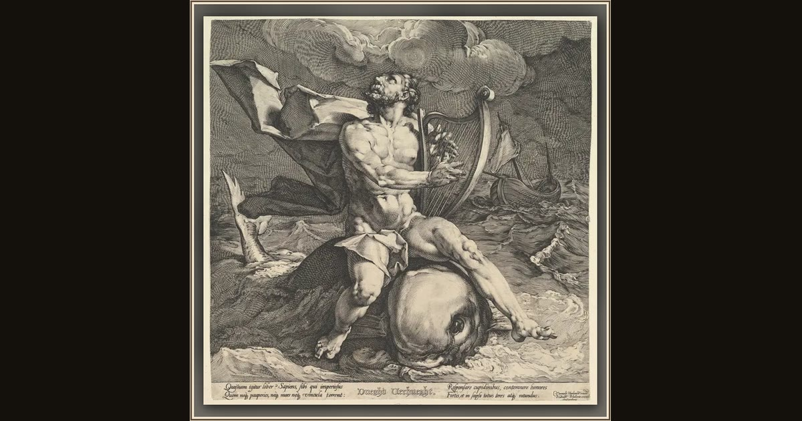

Arion on a Dolphin
Jan Muller, after Cornelis Cornelisz van Haarlem · ca. 1590 · met
The singer Arion, holding his harp, rides a dolphin through rough sea while the ship that abandoned him sails off behind, as in the Corinthian and Lesbian story (1.24.6) Explore its place in Herodotus's Histories, Book I, chapter 73.